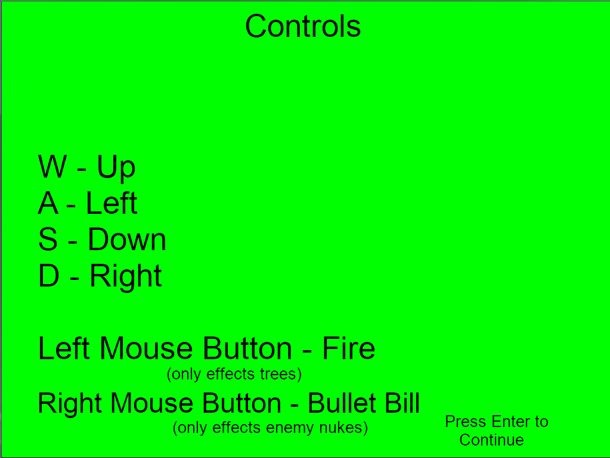

| UFO | Link to Game Download | Recreated by: Tyler Dillinder, Fabian Menzona-Cisneros, and John DeShano |
| Last Edited February 27, 2018 | Original by: Tyler Dillinder, Fabian Menzona-Cisneros, and John DeShano |
|  |
| Background Objective Player’s controls |
|
| Feature # | Short Name | Description | Status/Functionality |
| 1 | Shooting | Makes the game possible for adding enemies, and health. Instead of just collecting and running from enemies and you can do something with them. This also makes it have two different weapons. | Working |
| 2 | Enemy Spawning | This makes the game continue on and last. With there being no limit to enemies it makes the game more challenging. It helps give more of a purpose to the game. | Working - Needs a few adjustments |
| 3 | Tree spawning | The tree spawning adds a nature feeling to the game. It gives more score per destruction. And also gives the game a purpose, while making it harder with the enemies. | Working |
| The scores changed because the improvements people wanted to see we’re met. So even if each improvement was made to something different than the score changed it makes the player have a different perspective on the game overall. Although even the player playing for a second time can also make them realize some more flaws in the game. We revised the game by adding enemies and we added another gun which separated the bullets for the trees and the enemies. The next thing we would add to the game is sounds, and more levels. The levels gives the game more to do and the sounds makes it more fun to play. |
| Our group worked together by assigning a task to each of the people in our group, such as shooting, enemy and tree spawning and movement or basics. The tools we used to collaborate with slack and GitHub. Slack was used to give eachother files and Github was used to create our final game by merging each file. The best parts of working with a team would be not having to do all the work and having people in the group that could help you if you were stuck. The worse part would probably be if someone in the group wasn’t doing any work then that would put us behind on the deadline. We overcame this by splitting their working between the rest of the team so it would get finished. |